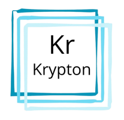

Ilustrasi Krypton pada Laser Kamera
Krypton memiliki nomor atom 36, tidak berwarna, tidak berbau, memiliki banyak garis spektrum dan plasma kripton, dan tidak berasa yang terjadi dalam jumlah kecil di atmosfer.
Sumber gambar: wikipediaKrypton biasanya digunakan dalam Pencahayaan dan Fotografi.





Atur panjang gelombang dan intensitas laser untuk menghasilkan gambar terbaik:
Kualitas Gambar: -